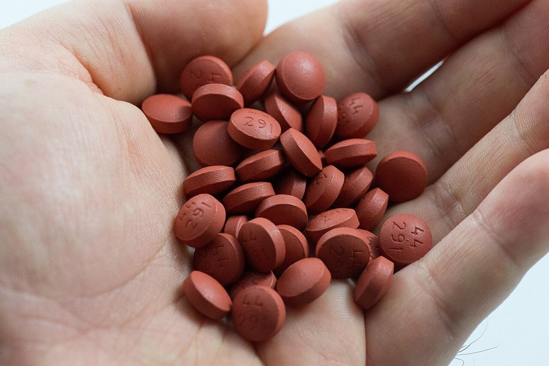

Vitamin E and Brain Health: What the Evidence Actually Shows
Vitamin E's reputation as a brain antioxidant is older than most of the supplements marketed around it. The research is more specific, and more conditional, than the reputation suggests.

Key takeaways
- Vitamin E is a fat-soluble antioxidant that protects brain cell membranes from oxidative damage, a plausible but not proven path to supporting cognition.
- One major trial found high-dose vitamin E modestly slowed functional decline in people already diagnosed with mild-to-moderate Alzheimer's disease.
- For healthy people, NIH's own fact sheet says there's little evidence that supplements help maintain brain health or prevent decline.
- Observational studies on diet and supplement intake are inconsistent, with some cohorts showing a protective link and others showing none.
- High-dose vitamin E supplements carry a bleeding risk, including a possible increase in hemorrhagic stroke, which matters more than most people assume for a "harmless" vitamin.
Vitamin E is a fat-soluble antioxidant that protects cell membranes, including in the brain, from oxidative damage. One large clinical trial found that high-dose vitamin E modestly slowed functional decline in people already diagnosed with Alzheimer's disease. For healthy adults, though, the evidence that supplements protect memory or prevent decline is thin, and high doses carry a real bleeding risk.
Here's what the research actually measured, where the one clear positive trial applies, and where the antioxidant story runs ahead of proof.
What is vitamin E, and why is it linked to the brain?
Vitamin E is a fat-soluble vitamin that exists in eight related forms, with alpha-tocopherol being the one the body uses and stores most. Its main job is acting as an antioxidant, neutralizing unstable molecules called free radicals before they damage cell membranes. Brain tissue is rich in fatty acids and burns a disproportionate share of the body's oxygen, which makes it especially vulnerable to this kind of oxidative stress. That vulnerability is the entire basis for vitamin E's brain-health reputation: a plausible mechanism, tested for decades, with a track record that's genuinely mixed.
Does vitamin E actually protect against cognitive decline?
It depends heavily on who's being studied. In healthy adults without diagnosed cognitive impairment, the NIH Office of Dietary Supplements states plainly that research provides little evidence that vitamin E supplements help healthy people, or people with mild memory problems, maintain brain health. Observational cohort studies tracking diet and supplement use over years tell a less uniform story: some report that people with the highest vitamin E intake show meaningfully slower cognitive decline, while other cohorts and systematic reviews find no clear link at all. Pooled analyses, or meta-analyses, land somewhere in between, generally suggesting a possible modest association without proving that vitamin E causes the difference.
Part of the disagreement comes down to how the studies were designed. Randomized trials testing a vitamin E pill against a placebo in otherwise healthy people haven't found a prevention benefit, while the cohort studies finding an association are observational, meaning they can't rule out that people who happen to eat more vitamin E also have other healthier habits driving the result. That gap between trial design types is a big part of why this remains an open question rather than a settled one.
What did the major Alzheimer's vitamin E trial actually find?
The clearest positive result comes from a 2014 randomized trial of 613 people already diagnosed with mild-to-moderate Alzheimer's disease. Participants received 2,000 IU of vitamin E a day, the drug memantine, both, or a placebo, all on top of their existing Alzheimer's medication. Over roughly two and a half years, the vitamin E group declined about 19% per year less on a standard measure of daily function than the placebo group, which researchers described as a modest but clinically meaningful delay. Memantine alone, and the combination, showed no added benefit. The study's authors were careful to note this applied to people with an existing diagnosis, not to healthy people hoping to prevent decline, and flagged that vitamin E's interaction with blood thinners needs more safety data.
What's the right amount of vitamin E, and can you get too much?
| Food | Approximate vitamin E |
|---|---|
| Wheat germ oil, 1 tablespoon | ~20 mg |
| Sunflower seeds, 1 ounce | ~7.4 mg |
| Almonds, 1 ounce | ~6.8 mg |
| Sunflower oil, 1 tablespoon | ~5.6 mg |
| Hazelnuts, 1 ounce | ~4.3 mg |
| Peanut butter, 2 tablespoons | ~2.9 mg |
| Spinach, boiled, ½ cup | ~1.9 mg |
Adults generally need around 15 mg a day, a target most people can reach through food alone with a handful of nuts or seeds and some cooking oil. The upper limit from supplements is 1,000 mg a day, a dose almost nobody reaches through diet, which is part of why high-dose vitamin E problems trace back almost exclusively to supplement use, not food.
COMPLEX
The memory formula we rate highest in 2026
One formula combined a fully transparent, clinically-dosed label, citicoline, bacopa, phosphatidylserine and B-vitamins, with a 60-day guarantee.
See Today's Price →Does vitamin E work better as part of a whole diet pattern?
Several of the observational cohorts behind vitamin E's brain research didn't isolate the vitamin in a lab; they measured what people actually ate over years, which usually means vitamin E arrived packaged with other nutrients, fiber and healthy fats from nuts, seeds and olive oil. Diet patterns like the Mediterranean diet, which happen to be rich in dietary vitamin E, are independently linked to slower cognitive decline in their own right. That overlap makes it genuinely hard to credit vitamin E alone for a benefit that might really belong to the broader eating pattern it travels with. It's one more reason the food-based studies and the isolated-supplement trials don't always point the same direction.
Are there side effects or risks from vitamin E supplements?
At the 15 mg level found in a typical diet, vitamin E has essentially no downside. The concerns show up at high supplemental doses, generally several hundred milligrams and above. Research has linked high-dose alpha-tocopherol supplements to an increased risk of hemorrhagic stroke, bleeding in the brain, likely related to vitamin E's mild effect on blood clotting. That's a real tradeoff for the modest cognitive benefit seen only in the Alzheimer's trial, and it's a central reason doctors don't recommend high-dose vitamin E to otherwise healthy people on the chance it might help their memory. Some research has also raised questions about high-dose vitamin E and overall mortality risk in certain populations, which is a further reason this isn't a supplement to self-prescribe at high doses without medical guidance.
How does vitamin E compare with other brain antioxidants?
Vitamin E isn't the only antioxidant studied for cognition; beta-carotene and vitamin C get similar attention, with similarly inconsistent human trial results. What sets vitamin E apart is the one well-designed trial in diagnosed Alzheimer's patients, which gives it a narrower but more concrete use case than most antioxidants in this category have earned. For a broader look at how beta-carotene stacks up, see our separate guide to beta-carotene and brain health. Researchers have also tested antioxidant combinations rather than single nutrients, on the theory that oxidative stress involves multiple pathways at once, though combination trials haven't consistently outperformed single-nutrient ones either.
Who might reasonably consider a vitamin E supplement?
People already diagnosed with mild-to-moderate Alzheimer's, in consultation with their neurologist, are the clearest candidates, since that's the population the strongest trial actually studied. Healthy adults looking for a general cognitive edge are better served meeting the 15 mg target through food, where there's no bleeding risk to weigh, and saving supplement decisions for a conversation with a doctor if diet alone falls short. Anyone already taking a multivitamin should check its vitamin E content first, since stacking a separate high-dose product on top can add up faster than people expect.
Frequently asked questions
Does vitamin E help with memory loss that's already happening?
One large trial found high-dose vitamin E modestly slowed functional decline in people already diagnosed with mild-to-moderate Alzheimer's disease. That's a different claim from reversing memory loss, and it doesn't apply to healthy people or to prevention.
Can I get too much vitamin E from food?
Essentially no. The upper limit of 1,000 mg a day applies to supplements, not whole food, since it's very hard to reach that amount through diet alone.
Is natural vitamin E better than synthetic?
Natural vitamin E, listed as d-alpha-tocopherol, is about twice as potent per milligram as the synthetic form, listed as dl-alpha-tocopherol. Check the label if you're comparing doses between products.
Does vitamin E interact with blood thinners?
Yes. High-dose vitamin E can have a mild blood-thinning effect of its own, so combining it with warfarin or other anticoagulants raises bleeding risk. Anyone on blood thinners should talk to a doctor before adding a vitamin E supplement.
Should people with mild cognitive impairment take vitamin E?
The evidence here is inconsistent, with some reviews finding a possible protective association and others finding none. It's a conversation to have with a doctor rather than a clear yes, especially given the bleeding risk at high doses.
How long would it take to see any effect?
The Alzheimer's trial that found a benefit ran for about two and a half years before the difference became clear. Vitamin E isn't something that produces a noticeable short-term change in thinking.
Is dietary vitamin E the same as the vitamin E oil used on skin?
Chemically related, but used differently. Topical vitamin E oil is applied to skin and isn't a substitute for dietary or supplemental intake, which is what the brain-health research actually looked at.
Looking for an ingredient panel built for memory, not just antioxidants?
See the memory formulas our editors rate highest for 2026, each built on ingredients with more direct human cognitive research than a general antioxidant like vitamin E.
See the Top 5 Memory Formulas →Related: Beta-carotene and brain health · Omega-3 and brain health · Best vitamins and nutrients for brain fog · How to improve your memory · Best memory formulas of 2026